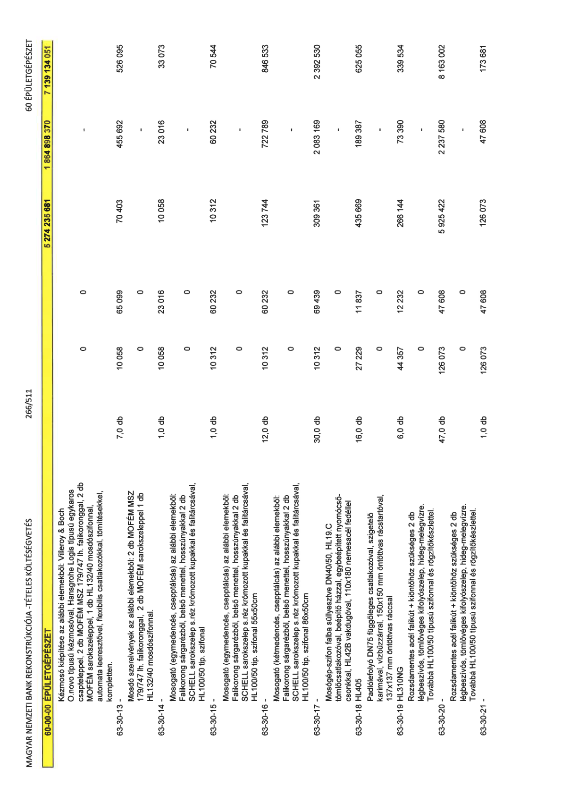

| Tétel | Menny. | Egys. | Anyag e.ár (net HUF) | Díj e.ár (net HUF) | Anyag összesen (net HUF) | Díj összesen (net HUF) | Anyag+Díj összesen (net HUF) |
|---|---|---|---|---|---|---|---|
| 60-00-00 ÉPÜLETGÉPÉSZET | NaN | NaN | 0 | 0 | 5 274 235 681 | 1 864 898 370 | 7 139 134 051 |
| Kézmosó kiépítése az alábbi elemekből: Villeroy & Boch O.novo típusú kézmosóval, Hansgrohe Logis típusú egykaros csapteleppel, 2 db MOFÉM MSZ 179/747 lh. falikoronggal, 2 db MOFÉM sarokszeleppel, 1 db HL132/40 mosdószifonnal, automata leeresztővel, flexibilis csatlakozókkal, tömítésekkel, kompletten. | 0 | 0 | 0 | 0 | 0 | 0 | 0 |
| 63-30-13 - | 7,0 | db | 10 058 | 65 099 | 70 403 | 455 692 | 526 095 |
| Mosdó szerelvények az alábbi elemekből: 2 db MOFÉM MSZ 179/747 lh. falikoronggal, 2 db MOFÉM sarokszeleppel 1 db HL132/40 mosdószifonnal. | 0 | 0 | 0 | 0 | 0 | 0 | 0 |
| 63-30-14 - | 1,0 | db | 10 058 | 23 016 | 10 058 | 23 016 | 33 073 |
| Mosogató (egymedencés, csepptálcás) az alábbi elemekből: Falikorong sárgarézből, belső menettel, hosszúnyakkal 2 db SCHELL sarokszelep s.réz krómozott kupakkal és falitárcsával, HL100/50 tip. szifonal | 0 | 0 | 0 | 0 | 0 | 0 | 0 |
| 63-30-15 - | 1,0 | db | 10 312 | 60 232 | 10 312 | 60 232 | 70 544 |
| Mosogató (egymedencés, csepptálcás) az alábbi elemekből: Falikorong sárgarézből, belső menettel, hosszúnyakkal 2 db SCHELL sarokszelep s.réz krómozott kupakkal és falitárcsával, HL100/50 tip. szifonal 55x50cm | 0 | 0 | 0 | 0 | 0 | 0 | 0 |
| 63-30-16 - | 12,0 | db | 10 312 | 60 232 | 123 744 | 722 789 | 846 533 |
| Mosogató (kétmedencés, csepptálcás) az alábbi elemekből: Falikorong sárgarézből, belső menettel, hosszúnyakkal 2 db SCHELL sarokszelep s.réz krómozott kupakkal és falitárcsával, HL100/50 tip. szifonal 86x50cm | 0 | 0 | 0 | 0 | 0 | 0 | 0 |
| 63-30-17 - | 30,0 | db | 10 312 | 69 439 | 309 361 | 2 083 169 | 2 392 530 |
| Mosógép-szifon falba süllyesztve DN40/50, HL19.C tömlőcsatlakozóval, beépítő házzal, egybeépített nyomócső- csonkkal, HL42B vakdugóval, 110x180 nemesacél fedéllel | 0 | 0 | 0 | 0 | 0 | 0 | 0 |
| 63-30-18 HL405 | 16,0 | db | 27 229 | 11 837 | 435 669 | 189 387 | 625 055 |
| Padlólefolyó DN75 függőleges csatlakozóval, szigetelő karimával, vízbűzzárral, 150x150 mm öntöttvas rácstartóval, 137x137 mm öntöttvas ráccsal | 0 | 0 | 0 | 0 | 0 | 0 | 0 |
| 63-30-19 HL310NG | 6,0 | db | 44 357 | 12 232 | 266 144 | 73 390 | 339 534 |
| Rozsdamentes acél falikút + kiöntőhöz szükséges 2 db légbeszívós, tömlővéges kifolyószelep, hideg-melegvízre. Továbbá HL100/50 típusú szifonnal és rögzítőkészlettel. | 0 | 0 | 0 | 0 | 0 | 0 | 0 |
| 63-30-20 - | 47,0 | db | 126 073 | 47 608 | 5 925 422 | 2 237 580 | 8 163 002 |
| Rozsdamentes acél falikút + kiöntőhöz szükséges 2 db légbeszívós, tömlővéges kifolyószelep, hideg-melegvízre. Továbbá HL100/50 típusú szifonnal és rögzítőkészlettel. | 0 | 0 | 0 | 0 | 0 | 0 | 0 |
| 63-30-21 - | 1,0 | db | 126 073 | 47 608 | 126 073 | 47 608 | 173 681 |
